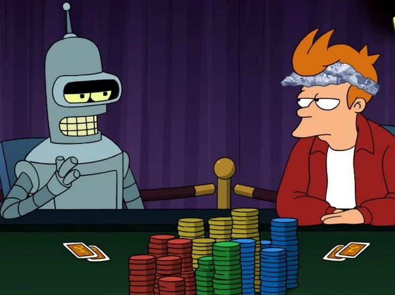

Ονοματεπώνυμο: Περίδης Ιωάννης
AM: 2018030069
info: iperidis@isc.tuc.gr
ΣΎΝΟΨΗ:
Η εργαστηριακή άσκηση αυτή, βασίστηκε στον τομέα λήψης αποφάσεων
και στην μοντελοποίηση προβλήματος απόφασης και επίλυσής της.
Δημιούργησα έναν πράκτορα τον "Poker Robot Assistant", ο οπόιος
λειτουργεί μέσω κάποιον πολύπλοκων δέντρων αποφάσεων, διαγραμμάτων,πιθανοτικών τυπών και δεικτών.
Οι αποφάσεις αυτές στηρίζονται όλες στον θεωρητικό βέλτιστο τρόπο παιξίματος (GTO)
του παιχνιδιού Heads-Up,Texas Hold'em Poker (Pot-limit),
αλλά ταυτόχρονα βασίζονται και στον τρόπο και συμπεριφορά
παιξίματος του κάθε διαφορετικού αντιπάλου.